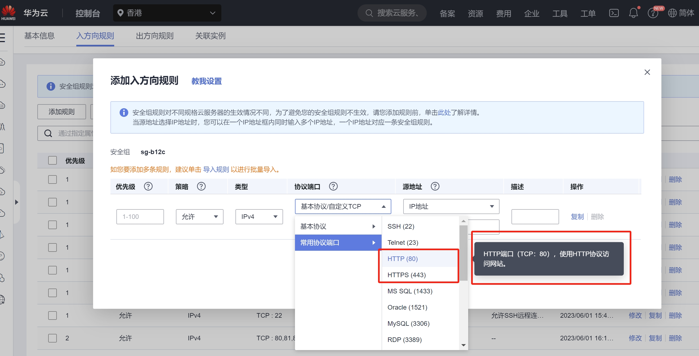

总结
需要准备
- 购买服务器(切记买香港)、域名；
- 修改域名绑定的服务器
- api.hermiablog.com：用于后端服务器
- web.hermiablog.com：用于前端
- 购买、解析、下载SSL证书
- 安装XShell 和 Xftp
基础搭建
- 在根目录新建项目文件夹workspace
- 在项目文件夹中新建两个文件夹用于存放前后端文件
- 新建
/etc/nginx/vhosts文件夹，用于安装证书和配置nginx - 安装SSL证书：在
/etc/nginx/vhosts下新建cert文件夹，上传两个域名的证书
后端
- 安装Node
- 安装Git
- 将后端文件上传到workspace/node文件夹里
- 更改npm镜像源，安装依赖包
- 访问
http://110.41.48.252:8888/api/menu测试 - 安装Nginx
- 在 nginx.conf 文件中的引入自定义配置文件，并做 Gzip 压缩
user nginx;
worker_processes auto;
error_log /var/log/nginx/error.log;
pid /run/nginx.pid;
# Load dynamic modules. See /usr/share/doc/nginx/README.dynamic.
include /usr/share/nginx/modules/*.conf;
events {
use epoll;
worker_connections 51200;
multi_accept on;
}
http {
log_format main '$remote_addr - $remote_user [$time_local] "$request" '
'$status $body_bytes_sent "$http_referer" '
'"$http_user_agent" "$http_x_forwarded_for"';
access_log /var/log/nginx/access.log main;
sendfile on;
tcp_nopush on;
tcp_nodelay on;
keepalive_timeout 65;
types_hash_max_size 2048;
include /etc/nginx/mime.types;
default_type application/octet-stream;
# Load modular configuration files from the /etc/nginx/conf.d directory.
# See http://nginx.org/en/docs/ngx_core_module.html#include
# for more information.
# 添加 Gzip 压缩配置
gzip on;
gzip_min_length 1k;
gzip_buffers 4 16k;
gzip_http_version 1.1;
gzip_comp_level 6;
gzip_types application/atom+xml application/geo+json application/javascript application/x-javascript application/json application/ld+json application/manifest+json application/rdf+xml application/rss+xml application/xhtml+xml application/xml font/eot font/otf font/ttf image/svg+xml image/jpeg image/gif image/png text/css text/javascript text/plain text/xml;
gzip_vary on;
gzip_disable "MSIE [1-6]\.";
include /etc/nginx/conf.d/*.conf;
server {
listen 80 default_server;
listen [::]:80 default_server;
server_name _;
root /usr/share/nginx/html;
# Load configuration files for the default server block.
include /etc/nginx/default.d/*.conf;
location / {
}
error_page 404 /404.html;
location = /40x.html {
}
error_page 500 502 503 504 /50x.html;
location = /50x.html {
}
}
# 添加自定义配置文件，用于配置我们自己的域名
include /etc/nginx/vhosts/*.conf;
}
- 新建自定义配置文件api.hermiablog.com.conf
# server {
# listen 80;
# server_name api.hermiablog.com;
# location / {
# proxy_pass http://127.0.0.1:8888;
# }
# }
server {
# HTTPS 的默认访问端口 443
# 如果未在此处配置 HTTPS 的默认访问端口，可能会造成 Nginx 无法启动
listen 443 ssl;
# 证书绑定的域名
server_name api.hermiablog.com;
# 证书文件绝对路径
ssl_certificate vhosts/cert/api.hermiablog.com_server.crt;
# 证书私钥文件绝对路径
ssl_certificate_key vhosts/cert/api.hermiablog.com_server.key;
ssl_session_cache shared:SSL:1m;
ssl_session_timeout 5m;
# 自定义设置使用的TLS协议的类型以及加密套件（以下为配置示例，请您自行评估是否需要>配置）
# TLS协议版本越高，HTTPS通信的安全性越高，但是相较于低版本TLS协议，高版本TLS协议对浏览器的兼容性较差。
ssl_ciphers ECDHE-RSA-AES128-GCM-SHA256:ECDHE:ECDH:AES:HIGH:!NULL:!aNULL:!MD5:!ADH:!RC4;
ssl_protocols TLSv1.1 TLSv1.2 TLSv1.3;
# 表示优先使用服务端加密套件。默认开启
ssl_prefer_server_ciphers on;
location / {
proxy_pass http://127.0.0.1:8888;
}
}
- 安装PM2
- 启动nginx、使用pm2启动Node
前端
- 将前端文件上传到workspace/vueShop文件夹里
- 安装npm依赖包
- 定义配置文件 web.hermiablog.com.conf
# 以下属性中，以ssl开头的属性表示与证书配置有关。
server {
# 配置HTTPS的默认访问端口为443。
# 如果未在此处配置HTTPS的默认访问端口，可能会造成Nginx无法启动。
# 如果您使用Nginx 1.15.0及以上版本，请使用listen 443 ssl代替listen 443和ssl on。
listen 443 ssl;
# 填写绑定证书的域名
server_name web.hermiablog.com;
# 证书文件绝对路径
ssl_certificate vhosts/cert/web.hermiablog.com_server.crt;
# 证书私钥文件绝对路径
ssl_certificate_key vhosts/cert/web.hermiablog.com_server.key;
# 指定客户端可以重用会话参数的时间（超时之后不可使用）
ssl_session_timeout 5m;
# 表示使用的加密套件的类型
ssl_ciphers ECDHE-RSA-AES128-GCM-SHA256:ECDHE:ECDH:AES:HIGH:!NULL:!aNULL:!MD5:!ADH:!RC4;
# 表示使用的TLS协议的类型，您需要自行评估是否配置TLSv1.1协议。
ssl_protocols TLSv1.1 TLSv1.2 TLSv1.3;
# 设置协商加密算法时，优先使用我们服务端的加密套件，而不是客户端浏览器的加密套件。
ssl_prefer_server_ciphers on;
location / {
# Web网站程序存放目录
root /workspace/vueShop/dist;
try_files $uri $uri/ /index.html;
index index.html index.htm;
}
# 服务端代理
location ^~/api {
proxy_pass https://api.hermiablog.com;
}
location ^~/images {
proxy_pass https://api.hermiablog.com;
}
location ~ .*\.(gif|jpg|jpeg|png|bmp|swf)$ {
root /workspace/vueShop/dist;
}
location ~ .*\.(js|html|css)?$ {
root /workspace/vueShop/dist;
expires 30d;
}
}
server {
listen 80;
server_name web.hermiablog.com;
# 将所有 HTTP 请求通过 rewrite 指令重定向到 HTTPS
rewrite ^(.*) https://$server_name$1 permanent;
}
日常使用
cd /workspace/node
pm2 start app.js
cd /usr/sbin
./nginx
准备
购买云服务器(一定要买香港的！)
- 进入弹性云服务器 ECS，点击购买弹性云服务器
- 服务器购买配置选择
- 计费模式：
- 短期测试可选择按量付费1核1G即可（经济实惠）不需要时，随时可释放；
- 长期部署可按年购买更加划算
- 区域：
- 服务器选择中国香港地区的，就不用备案马上就能用，中国大陆地区的都需要先备案才能用
- 备案时间根据各地区的要求时间不一样（从 1 周、0.5 个月、1 个月 … 不等）
- 如果是需要正式运营的企业或个人项目，都需要走备案流程
- 规格
- 学习阶段建议：x86计算、通用计算型、内存1GiB，选最便宜的
- 镜像
- 公共镜像
- 操作系统：
CentOS里面选个最新的
- 带宽
- 公网带宽：按流量计费
- 带宽大小：20；(1-300MB都可以)
- 勾选：随实例释放
- 其他按照默认配置
- 系统配置：
- 选择自定义密码 -> 输入服务器密码（一定要记录下来，否则无法登录）
- 购买成功后
- IP地址为弹性公网的IP地址
XShell 和 Xftp 远程链接云服务器
- 实际上，SSH 是一个网络协议，允许通过网络连接到 Linux 和 Unix 服务器。SSH 使用公钥加密来认证远程的计算机。
XShell 和 Xftp 是 NetSarang 计算机公司 SSH 客户端软件- XShell 是非常强大的 SSH 客户端
- Xftp 通过网络传输文件
其他常用的 SSH 登录工具- SecureCRT
- Putty
- Git Bash
- … 等
安装步骤
下载免费版
XShell和Xftp：官方下载地址：https://www.xshell.com/zh/(opens new window)；当前页面底部，选择 家庭/学校免费XShell 和 Xftp 安装过程直接下一步。
- 注意：选择免费版即可 ！
- 两个客户端都需要安装好，XShell用于命令行操作服务器，Xftp用于对服务器的文件上传和下载
新建连接服务器：
- 新建会话链接 -> 输入服务器名称（可自定义） -> 输入主机 ip 地址（服务器弹性公网 ip）-> 端口号 22 -> 其他默认，点击确认即可
- 选择 “接受并保存”
- 双击选择我们的服务器名称 -> 输入登录服务器的用户名（默认用户名为 root）-> 勾选记住用户名
- 输入服务器密码 - > 确认(看黑窗口前面的名称，
[C]是没成功的)
- 输入服务器密码 - > 确认(看黑窗口前面的名称，
输入命令连接测试：
- 方式一：
ls /，即可看到文件目录(横排显示) - 方式二：
cd /->ll，即可看到文件目录(竖排显示)
- 方式一：
Linux 系统目录结构
- 在当前命令窗口下输入命令：
ls /或·cd /,就会得到目录结构
- 在当前命令窗口下输入命令：
通过
Xftp链接服务器，用于文件上传- 安装
Xftp客户端 -> 在XShell的工具栏中，点击Xftp图标即可打开Xftp客户端 - 无需在输入任何用户名和密码验证（非常方便） - 打开
Xftp客户端 - > 即可向服务器上传文件或下载文件
- 安装
Nginx——基础准备
此次 Vue 项目的部署使用 与 Node 后端项目同一台云服务器进行部署，先统一做 Nginx 的基础安装、配置。
Nginx 简介
Nginx (engine x)是一个高性能的 HTTP 和反向代理 web 服务器，同时也提供了 IMAP/POP3/SMTP 服务。- Nginx 官网：http://nginx.org/(opens new window)
- Nginx 是一款轻量级的 Web 服务器/反向代理服务器及电子邮件（IMAP/POP3）代理服务器，在 BSD-like 协议下发行。其特点是占有内存少，并发能力强，事实上 nginx 的并发能力在同类型的网页服务器中表现较好
- 中国大陆使用 nginx 网站用户有：百度、京东、新浪、网易、腾讯、淘宝等。
- 下载地址：http://nginx.org/en/download.html
- 查看所有历史版本，地址： http://nginx.org/download/
通过 yum 方式安装 Nginx
官方 yum 安装教程：http://nginx.org/en/linux_packages.html#RHEL-CentOS
documentation–>Installing nginx–>Installation on Linux：packages–> 找到RHEL and derivatives
步骤
- 安装先决条件
# 升级所有包同时也升级软件和系统内核
yum update
# 安装yum依赖
yum install yum-utils
- 添加 yum 源文件
cd /etc/yum.repos.d/
# 添加nginx的yum源码
vim nginx.repo
# 或 直接新建 nginx.repo 文件
vim /etc/yum.repos.d/nginx.repo
- 添加配置信息到 nginx.repo 文件中
- 直接复制，添加到终端
[nginx-stable]
name=nginx stable repo
baseurl=http://nginx.org/packages/centos/$releasever/$basearch/
gpgcheck=1
enabled=1
gpgkey=https://nginx.org/keys/nginx_signing.key
module_hotfixes=true
[nginx-mainline]
name=nginx mainline repo
baseurl=http://nginx.org/packages/mainline/centos/$releasever/$basearch/
gpgcheck=1
enabled=0
gpgkey=https://nginx.org/keys/nginx_signing.key
module_hotfixes=true
- 保存退出
- 上一步完成后，点击
esc键，然后输入:wq
- 上一步完成后，点击
:wq
- 检查是否配置成功
cat /etc/yum.repos.d/nginx.repo
- 修改内容：
vim /etc/yum.repos.d/nginx.repo
- 安装 Nginx
yum install -y nginx
# yum install nginx
# 如果使用yum install xxxx，会找到安装包之后，询问你Is this OK[y/d/N]，需要你手动进行选择。但是如果加上参数-y，就会自动选择y，不需要你再手动选择！
- 查看 Nginx 的版本号
nginx -v
# 显示nginx的版本号和编译信息
- 查看安装的所有 Nginx 包
yum list | grep nginx
- 查看 Nginx 安装相关的文件位置信息
whereis nginx
使用Nginx
- 启动Nginx
- 方式一：
cd /usr/sbin/–>ll–>./nginx - 方式二：
/usr/sbin/nginx - 判断 Nginx 是否运行成功
- 方法1：在浏览器中输入弹性公网ip，看是否能访问nginx
- 方法2：在 linux 系统中运行的每个应用程序都会产生一个进程，可通过查看 nginx 进程是否存在来判断 nginx 是否运行成功。
- 方式一：
ps -ef | grep nginx
# ps -ef | grep 应用程序：列出该应用程序所有进程
# grep nginx：过滤掉和nginx无关的进程
- 方法3：查看 nginx 的进程 pid
ps -C nginx -o pid
- 检查 nginx 配置文件的正确性
配置文件中是否存在语法错误，以及可查看 nginx 的配置文件所在路径
nginx -t
配置好了之后仍访问不了时：
- 云服务器：查看安全组端口是否开启，
nginx端口是80；- 虚拟机：防火墙是否关闭；
- Nginx 常用命令
# 修改配置文件后重新加载生效
nginx -s reload
# 快速停止或关闭Nginx服务
nginx -s stop # 或 杀掉Nginx进程
# 完整有序的停止Nginx
nginx -s quit
# 查询运行文件所在路径
which nginx
# 打开文件夹
cd /etc/yum.repos.d/
# 查看文件内容
cat /etc/yum.repos.d/nginx.repo
#编辑文件
vim /etc/yum.repos.d/nginx.repo
按i进入`INSERT`模式
- vim 模式编辑文件
# 进入默认站点目录
cd /usr/share/nginx/
ll
cd html/
ls
# 编辑 index.html 页面
vim index.html
# 按下 “i” 键编辑即可
编辑完点`esc`
# 不保存强制退出
:q!
# 保存
:w
# 保存并退出
:wq
# 只查看，不编辑
cat index.html
修改nginx.conf文件
- 在 /etc/nginx/目录下新建文件夹 vhosts
cd /etc/nginx/
ls
mkdir vhosts
cd vhosts
ls
- 在修改默认的 nginx.conf 配置文件时，需要先备份
cp /etc/nginx/nginx.conf /etc/nginx/nginx.conf.bak
- 编辑 nginx.conf 配置文件
cd /etc/nginx/
ll
vim nginx.conf
- 在 nginx.conf 文件中的引入自定义配置文件
# 在 http 模块底部增加自定义配置文件，用于配置我们自己的域名
http {
...
include /etc/nginx/conf.d/*.conf;
server {
...
}
# 添加自定义配置文件，用于配置我们自己的域名
include /etc/nginx/vhosts/*.conf;
}
完全卸载 Nginx
- 停止 Nginx 服务
- 方式1：直接停止或关闭 nginx
# 查看 nginx 的运行进程
ps -ef | grep nginx
# 方式一：直接停止或关闭 nginx
nginx -s stop
# 再次查看 nginx 的运行进程
ps -ef | grep nginx
- 方式2：杀掉 nginx的进程
# 查看nginx的文件位置
whereis nginx
# 再次启动 nginx
/usr/sbin/nginx
# 查看 nginx 的运行进程
ps -ef | grep nginx
# 方式二：杀掉 nginx的进程 注：进程的PID值 每次启动都会不一样
kill -9 19175 19176
# 再次查看 nginx 的运行进程
ps -ef | grep nginx
- 查找根下所有名字包含 nginx 的文件
find / -name nginx
- 执行命令
rm -rf *删除 nignx 安装的相关文件- 说明：全局查找往往会查出很多相关文件，但是前缀基本都是相同，后面不同的部分可以用
*代替，以便快速删除
- 说明：全局查找往往会查出很多相关文件，但是前缀基本都是相同，后面不同的部分可以用
rm -rf 文件路径*
# 为保证准确无误的删除每一个目录和文件，建议逐个删除
- 如果设置了 Nginx 开机自启动的话，可能还需要下面两步
chkconfig nginx off
rm -rf /etc/init.d/nginx
- 再使用 yum 清理相关依赖和软件包
yum remove nginx
域名购买与解析
在任一云服务厂商购买域名
将域名解析到对应的服务器中，后边所有的内容都会基于域名来进行操作
域名结构解读
通俗解读
一个完整的域名有三个部分的结构，分别是顶级域名（一级域名）、二级域名、三级域名。
顶级域名、一级域名、二级域名、三级域名什么区别 ？- 从专业的角度解读
.com是顶级域名（或一级域名）baidu.com是二级域名www.baidu.com或baike.baidu.com是三级域名
- 民间域名级别解读
baidu.com是顶级域名（或一级域名）www.baidu.com或baike.baidu.com是二级域名xx.www.baidu.com或xx.baike.baidu.com是三级域名
国内阿里云、华为云、腾讯云的域名级别都是按民间级别解读定义的，建议也用此方式，避免产生额外的沟通问题。对于专业定义知道即可 ！
- 从专业的角度解读
我们在购买域名时：
- 只需要购买一级域名（xxx.com 或 xxx.其他后缀）就好
- 二级、三级 … 域名是不需要再次花钱购买的，只需后台解析即可使用。
注册域名
解析域名
- 按照民间域名级别
- 每一级域名都要单独解析才能访问，区别是一级域名
arryblog.com不用输入主机记录，其他级别都需要输入除一级域名以外新增的字符至主机记录- 值：服务器弹性公网的IP地址
步骤：管理解析–>添加记录集–>输入对应值
注意：
- 带
www的域名 与 不带www的 是完全不同的域名，需要分别单独解析才能访问
- 带
解析完成后
- 在浏览器输入域名即可访问
- 此时看到的是
nginx的欢迎页 - 但是在网址前会看到
不安全三个字，因为还没有配置HTTPS加密协议
HTTPS加密协议——访问时会有小锁
简介
SSL 证书
- SSL 证书（SSL Certificates）为网站和移动应用（APP）及小程序提供数据
HTTPS加密协议访问，保障数据的安全。- 装载 SSL 证书产品后自动激活浏览器中显示“锁”型安全标志，地址栏以“https”开头。
SSL 证书服务
- SSL 证书服务（SSL Certificates Service）是由各大云厂商联合中国及中国以外地域多家数字证书颁发机构（CA，Certificate Authority），在各大云平台上直接提供的数字证书申请和部署服务。
- SSL 证书服务帮助您以最小的成本将服务从 HTTP 转换成 HTTPS，实现网站或移动应用的身份验证和数据加密传输。
华为云等各云平台SSL证书和 HTTPS 的关系
- 您可以通过华为云 SSL 证书管理购买 SSL 证书，并向 CA 机构提交证书申请，CA 机构审核通过后将会签发证书。
- 签发后，您需要将 SSL 证书下载并安装到 Web 服务器中或一键部署至华为云其他云产品中，安装或部署完成后，您的 Web 服务器或云产品将会通过 HTTPS 加密协议来传输数据。
SSL 证书的作用
- 网站身份验证，确保数据发送到正确的客户端和服务器。
- HTTPS 加密传输协议可激活客户端浏览器到网站服务器之间的 SSL 加密通道（SSL 协议），从而实现高强度双向加密传输，防止传输数据被泄露或篡改。
- 会出现小锁
为什么网站需要 HTTPS ？
- 防劫持、防篡改、防监听：使用 SSL 证书实现网站的 HTTPS 化，可以对网站用户与网站间的交互访问全链路数据进行加密，从而实现传输数据的防劫持、防篡改、防监听。
- 提升网站的搜索排名：使用 SSL 证书实现网站的 HTTPS 化后，网站在搜索引擎显示结果中的排名将会更高，有利于提升网站的搜索排名和站点的可信度。
- 提升网站的访问流量：使用 SSL 证书实现网站的 HTTPS 化，可以强化网站在用户侧的身份可信程度，使网站用户能更安心地访问网站，提升网站的访问流量。
购买、申请SSL 证书
- 华为云官网：产品 -> 安全与合规 -> 云证书管理服务 CCM
- 购买免费SSL证书：选择’单域名’、’DV(basic)’、’(DigCert)’
- 申请免费 SSL 证书：
- 在测试证书中找到刚买的证书–>点击申请证书
- ‘系统生成CSR’、输入我们需要绑定的域名–>输入对应信息，提交申请
- NS验证
- 根据页面的验证步骤，回到域名解析页面添加记录集，一一对应
- 唯一要注意的是值要用
""包裹起来 - 添加完成后进行验证
- 注意
- 购买
SSL证书，注意：hermiablog.com、www.hermiablog.com默认是同一个证书；在给主域名申请证书时www.hermiablog.com绑定在一起；所以我们只需要申请一个证书
- 购买
安装 SSL 证书
- 下载证书
- DNS验证成功后，点击下载证书
- 找到
nginx文件夹下对应的文件，可修改文件名，去掉域名前的字母数字
- 在
Nginx服务器上安装证书- 在
/etc/nginx/vhosts/下新建文件夹，将其命名为cert - 将本地证书文件和私钥文件上传到
Nginx服务器的证书目录
- 在
cd /
whereis nginx
ll
cd vhosts/
mkdir cert
cd cert/
- 修改
Nginx配置文件- 在
/etc/nginx/目录下新建文件夹vhosts
- 在
whereis nginx
cd /etc/nginx/
ls
mkdir vhosts
cd vhosts
ls
- 在
vhosts下新建自定义配置文件域名.conf
# 与域名保持同名，是为了在部署多个项目时，容易区分和管理
vim 域名.conf
- 添加以下配置：
server {
#配置HTTPS的默认访问端口为443。如果在此处未配置HTTPS的默认访问端口，可能会导致Nginx无法启动。
listen 443 ssl;
#修改为您证书绑定的域名。
server_name hermiablog.com;
#替换成您的证书文件的路径和名称。
ssl_certificate vhosts/cert/hermiablog.com_server.crt;
#替换成您的私钥文件的路径。
ssl_certificate_key vhosts/cert/hermiablog.com_server.key;
ssl_session_cache shared:SSL:1m;
ssl_session_timeout 5m;
ssl_ciphers HIGH:!aNULL:!MD5; #加密套件。
ssl_prefer_server_ciphers on;
location / {
root /workspace/hermiablog; # Web网站程序存放目录
index index.html index.htm; #添加属性。
}
}
- 检测 Nginx 配置文件是否正确
nginx -t
- 重新加载配置文件，立即生效
nginx -s reload
总结：
- 假如有：主域名
hermiablog.com、二级域名www.hermiablog.com两个域名 - 我希望实现输入
hermiablog.com、www.hermiablog.com访问同一页面，那么需要：- 购买主域名，并解析二级域名
hermiablog.com、www.hermiablog.com在解析时绑定同一个IP地址
- 我希望实现
https和http访问同一页面，那么需要- 拦截
http请求，并将所有HTTP请求重定向到HTTPS
- 拦截
- 为什么会有两个协议？
SSL证书是通过HTTPS加密协议来传输数据，因此443端口绑定的是HTTPS协议- 而与网页默认的
HTTP协议绑定的是80端口
因此：
- 在
80端口的配置中，拦截http请求，并将所有HTTP请求通过rewrite指令重定向到HTTPS
rewrite ^(.*) https://$server_name$1 permanent;
后端服务部署
Node
下载 Node 的 Linux 安装包
# 进入到linux中的 文件夹，把下载的二进制文件，放在这个目录下
cd /usr/local/src
# 在当前目录，使用wget命令，下载node包
wget https://nodejs.org/dist/v20.10.0/node-v20.10.0-linux-x64.tar.xz
解压安装包，并修改包名
解压 Node 安装包，修改文件夹名称为 node
# 解压文件包
tar -xvf node-v20.10.0-linux-x64.tar.xz
# 修改包的名字为node
mv node-v20.10.0-linux-x64 node
配置环境变量
修改linux系统的环境变量（profile）,使node 和npm 变为全局
# 先备份， 以免造成重要文件修改后造成错误
cp /etc/profile /etc/profile.bak
# vim编辑器，打开/etc/profile 文件，对其编辑
vim /etc/profile
# 修改内容，在文件最下面添加 export PATH=$PATH:node的bin目录的路径
export PATH=$PATH:/usr/local/src/node/bin
# 退出编辑
esc
# 保存并退出
:wq
# 读取，并执行 /etc/profile文件中的命令
source /etc/profile
# 查看文件
cat /etc/profile
查看是否安装成功
查看 node 对应的版本，如果能打印，说明安装成功
node -v
npm -v
npx -v
注：
- 如输入命令后没有反应，可尝试 重启服务器 或 XShell 链接
- 如果出现以下问题，检查修改环境变量时，所添加的代码是否写在最后面
node: /lib64/libstdc++.so.6: version `GLIBCXX_3.4.20' not found (required by node)
node: /lib64/libstdc++.so.6: version `CXXABI_1.3.9' not found (required by node)
node: /lib64/libstdc++.so.6: version `GLIBCXX_3.4.21' not found (required by node)
Git
yum install git -y
安装完成，查看 Git 版本
git --version
npm包
npm 默认的镜像源下载速度很慢，通常切换国内淘宝镜像源，下载速度更快
# 查看当前正在使用的 npm 镜像源
npm config get registry
# 切换 npm 镜像源
npm config set registry https://registry.npmmirror.com
# 再次查看当前正在使用的 npm 镜像源
npm config get registry
Nginx
自定义Nginx配置文件
- 在/etc/nginx/vhosts下新建api.hermiablog.com.conf文件
# server {
# listen 80;
# server_name api.hermiablog.com;
# location / {
# proxy_pass http://127.0.0.1:8888;
# }
# }
server {
# HTTPS 的默认访问端口 443
# 如果未在此处配置 HTTPS 的默认访问端口，可能会造成 Nginx 无法启动
listen 443 ssl;
# 证书绑定的域名
server_name api.hermiablog.com;
# 证书文件绝对路径
ssl_certificate vhosts/cert/api.hermiablog.com_server.crt;
# 证书私钥文件绝对路径
ssl_certificate_key vhosts/cert/api.hermiablog.com_server.key;
ssl_session_cache shared:SSL:1m;
ssl_session_timeout 5m;
# 自定义设置使用的TLS协议的类型以及加密套件（以下为配置示例，请您自行评估是否需要>配置）
# TLS协议版本越高，HTTPS通信的安全性越高，但是相较于低版本TLS协议，高版本TLS协议对浏览器的兼容性较差。
ssl_ciphers ECDHE-RSA-AES128-GCM-SHA256:ECDHE:ECDH:AES:HIGH:!NULL:!aNULL:!MD5:!ADH:!RC4;
ssl_protocols TLSv1.1 TLSv1.2 TLSv1.3;
# 表示优先使用服务端加密套件。默认开启
ssl_prefer_server_ciphers on;
location / {
proxy_pass http://127.0.0.1:8888;
}
}

PM2
- 安装 PM2
npm i pm2 -g
- PM2 启动 Node 应用程序
cd /workspace/node/ibc-mall-server/
# pm2 start 应用程序入口程序
pm2 start app.js
- 启动、停止、重载、删除左右进程
# 启动所有进程
pm2 restart all
# 停止所有进程
pm2 stop all
# 重新加载所有进程
pm2 reload all
# 删除pm2列表中所有进程
pm2 delete all
- PM2 常用命令
注：app_name（应用名称）
# 重启
pm2 restart app_name
# 重新加载
pm2 reload app_name
# 停止
pm2 stop app_name
# 删除
pm2 delete app_name
# 查看实时显示日志
pm2 logs
# pm2 终端实时仪表盘
pm2 monit
环境变量管理
- 首先，停止 pm2 进程
pm2 stop all
- 修改环境变量
# 设置环境变量为生产环境 app 代表当前进程名称
NODE_ENV=production pm2 start app --update-env
- 验证环境变量是否设置成功
# 进入项目 src 目录
cd /workspace/node/ibc-mall-server/src
# 编辑 app.js 项目入口文件
vim app.js
- 在项目的入口 src/app.js 文件中，新增如下代码，在控制台打印输出 NODE_ENV
console.log("当前使用的环境变量 NODE_ENV：", process.env.NODE_ENV);
# 保存并退出
esc
:wq
- 重新启动 pm2，打印输出 productioin 生产环境
# 停止 pm2 所有进程
pm2 stop all
# 使用生产环境启动 pm2
NODE_ENV=production pm2 start app --update-env
# 查看日志
pm2 logs
Vue前端项目部署
新建项目文件夹，上传文件
在 Linux 系统根目录新建 Vue 项目的目录，新建 /workspace/vueShop 文件夹，用于存放 Vue 前端项目，并进入该目录
# 新建项目目录
mkdir -p /workspace/vueShop
# 进入项目
cd /workspace/vueShop
- 将前端文件上传
- 在 Vue 项目根目录下，安装 package.json 中的包依赖
# 目录切换至项目根目录
cd /workspace/vueShop
# 如果 Vue 项目下的 package.json 里面的包依赖关系都写进去了，则 npm install 就会自动下载需要的包
npm i
- 打包构建
npm run build-only
Nginx 部署 Vue 项目
自定义 Vue 项目 Nginx 配置文件
- 在 /etc/nginx/vhosts 目录下新建定义配置文件 web.hermiablog.com.conf
# 与域名同名便于区分
vim web.hermiablog.com.conf
- 配置文件内容
# 以下属性中，以ssl开头的属性表示与证书配置有关。
server {
# 配置HTTPS的默认访问端口为443。
# 如果未在此处配置HTTPS的默认访问端口，可能会造成Nginx无法启动。
# 如果您使用Nginx 1.15.0及以上版本，请使用listen 443 ssl代替listen 443和ssl on。
listen 443 ssl;
# 填写绑定证书的域名
server_name web.hermiablog.com;
# 证书文件绝对路径
ssl_certificate vhosts/cert/web.hermiablog.com_server.crt;
# 证书私钥文件绝对路径
ssl_certificate_key vhosts/cert/web.hermiablog.com_server.key;
# 指定客户端可以重用会话参数的时间（超时之后不可使用）
ssl_session_timeout 5m;
# 表示使用的加密套件的类型
ssl_ciphers ECDHE-RSA-AES128-GCM-SHA256:ECDHE:ECDH:AES:HIGH:!NULL:!aNULL:!MD5:!ADH:!RC4;
# 表示使用的TLS协议的类型，您需要自行评估是否配置TLSv1.1协议。
ssl_protocols TLSv1.1 TLSv1.2 TLSv1.3;
# 设置协商加密算法时，优先使用我们服务端的加密套件，而不是客户端浏览器的加密套件。
ssl_prefer_server_ciphers on;
location / {
# Web网站程序存放目录
root /workspace/vueShop/dist;
try_files $uri $uri/ /index.html;
index index.html index.htm;
}
# 服务端代理
location ^~/api {
proxy_pass https://api.hermiablog.com;
}
location ^~/images {
proxy_pass https://api.hermiablog.com;
}
location ~ .*\.(gif|jpg|jpeg|png|bmp|swf)$ {
root /workspace/vueShop/dist;
}
location ~ .*\.(js|html|css)?$ {
root /workspace/vueShop/dist;
expires 30d;
}
}
server {
listen 80;
server_name web.hermiablog.com;
# 将所有 HTTP 请求通过 rewrite 指令重定向到 HTTPS
rewrite ^(.*) https://$server_name$1 permanent;
}
- 保存并退出
esc
:wq
- 查看 cat web.hermiablog.com.conf
cat web.hermiablog.com.conf
- 检查配置文件中是否存在语法错误
nginx -t
- 重载 Nginx 服务
nginx -s reload
Nginx 性能优化，Gzip 压缩
Gzip 是一种用于文件压缩与解压缩的文件格式。
- 它基于 Deflate 算法，可将文件压缩地更小，从而实现更快的网络传输。
- Web 服务器与现代浏览器普遍地支持 Gzip，这意味着服务器可以在发送文件之前自动使用 Gzip 压缩文件，而浏览器可以在接收文件时自行解压缩文件。
而对于我们而言，开启 Gzip，不仅能提高网站打开速度，还能节约网站流量，如果购买的服务器是按照使用流量付费，开启 Gzip 就是在为自己省钱。
Nginx 与 Gzip
Nginx 内置了
ngx_http_gzip_module模块，该模块会拦截请求，并对需要做Gzip压缩的文件做压缩。因为是内部集成，所以我们只用修改 Nginx 的配置，就可以直接开启。Nginx 事件处理模型优化
nginx 的连接处理机制在于不同的操作系统会采用不同的 I/O 模型。
- Linux 下，nginx 使用 epoll 的 IO 多路复用模型；
- 在 freebsd 使用 kqueue 的 IO 多路复用模型；
- 在 solaris 使用/dev/pool 方式的 IO 多路复用模型；
- 在 windows 使用的 icop 等等。
要根据系统类型不同选择不同的事务处理模型，我们使用的是
Centos，因此将nginx的事件处理模型调整为epoll模型即可。GZIP 压缩性能优化
在 nginx 的默认主配置文件
nginx.conf中，添加以下配置即可
events {
use epoll;
worker_connections 51200;
multi_accept on;
}
http {
gzip on;
gzip_min_length 1k;
gzip_buffers 4 16k;
gzip_http_version 1.1;
gzip_comp_level 6;
gzip_types application/atom+xml application/geo+json application/javascript application/x-javascript application/json application/ld+json application/manifest+json application/rdf+xml application/rss+xml application/xhtml+xml application/xml font/eot font/otf font/ttf image/svg+xml image/jpeg image/gif image/png text/css text/javascript text/plain text/xml;
gzip_vary on;
gzip_disable "MSIE [1-6]\.";
}
修改完
nginx配置文件后，记得重载nginx服务即可生效
nginx -s reload`
- 验证 Gzip 是否成功
- 第一种方式是：
直接查看网络请求，打开浏览器的调试工具，查看 Network 请求，如果请求响应头的 Content-Encoding 字段为 gzip，就表示成功开启了 Gzip注意：需要清除浏览器的缓存才能看到
- 第二种方式是：
通过站长工具验证，打开网页 GZIP 压缩检测 (opens new window)，输入网站，进行查询
- 第一种方式是：
踩过的坑
安装nodejs时报错
node: /usr/lib64/libstdc++.so.6: version `GLIBCXX_3.4.14' not found (required by node)
node: /usr/lib64/libstdc++.so.6: version `GLIBCXX_3.4.18' not found (required by node)
node: /usr/lib64/libstdc++.so.6: version `CXXABI_1.3.5' not found (required by node)
node: /usr/lib64/libstdc++.so.6: version `GLIBCXX_3.4.15' not found (required by node)
node: /lib64/libc.so.6: version `GLIBC_2.16' not found (required by node)
node: /lib64/libc.so.6: version `GLIBC_2.17' not found (required by node)
node: /lib64/libc.so.6: version `GLIBC_2.14' not found (required by node)
- 原因：我购买的云服务器是CentOS 7.9版本，gcc版本太低
- 尝试升级glibc库，失败
- 解决办法：重新购买CentOS 8.2版本的操作系统
配置完成后，浏览器显示该网站暂时无法访问
- 原因：除香港地区外的云服务器都需要进行备案后才能访问
- 解决办法：重新购买云服务器